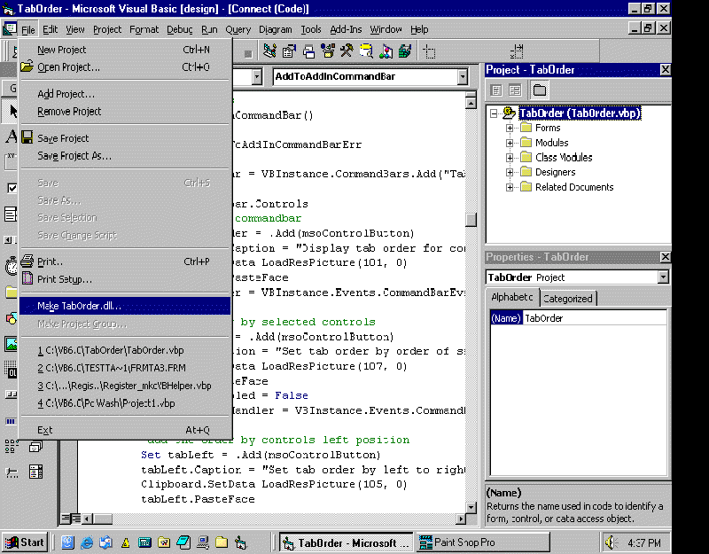
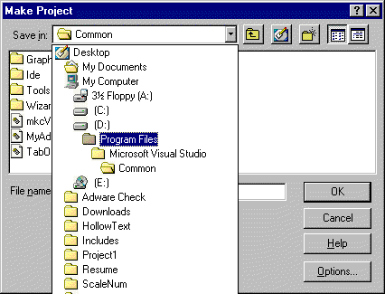
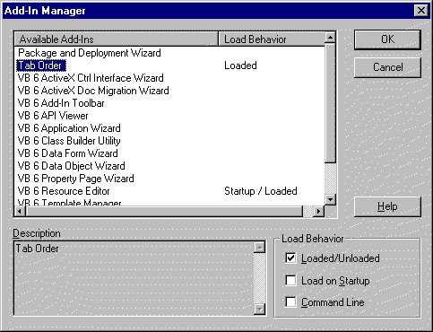
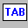
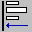
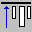

Tab
Order- Help
Copyright ©
2005 - Mark Duhaime
Contents:
What Is Tab Order
Tab Order ia a Visual Basic Add-In that allows you to reorder each Control(s) Tab Order or Tab Indexes to your specifications. Several methods allow you to do this quickly and efficiently.
Setting up Tab Order
The first thing you need to do is, create the DLL file. Load the TabOrder.vbp into Visual Basic and click File Make TabOrder.DLL as illustrated in Fig. 1.
Fig. 1

The next thing you need to do is, Select the Path Visual Basic was installed in and select Common. By making this selection all your projects will be able to see it. Fig. 2 illustrates this.
Fig. 2

Once you have completed these steps Tab Order is now ready for use. Open a project that you wish to change the Tab Order for and Select Add-Ins. Fig. 3
Fig. 3

Double Click Tab Order to load it into The Visual Basic IDE or if you wish it load load each time Visual Basic is started click appropriate check boxes. A toolbar will appear with these buttons.

Using Tab Order
Select the form in your project that you wish to change the tab order for.
Display the tab order or tabindexes for each control in the project. You will see new added to your project. These show you the present tab order of each control.
Select the controls in the order you wish the tab order then click this button to set the tab order accordingly.
Select this button to set the tab order based on each controls left position on the form. The tab order will be set from leftmost position to rightmost position.
Select this button to set the tab order based on each controls top position on the form. The tab order will be set from the topmost position to bottommost position.
Select a control and press this plus button to increase the tab order.
Select a control and press this minus button to decrease the tab order.
Select this button to Lock the controls tab order.
This brings up this help information.